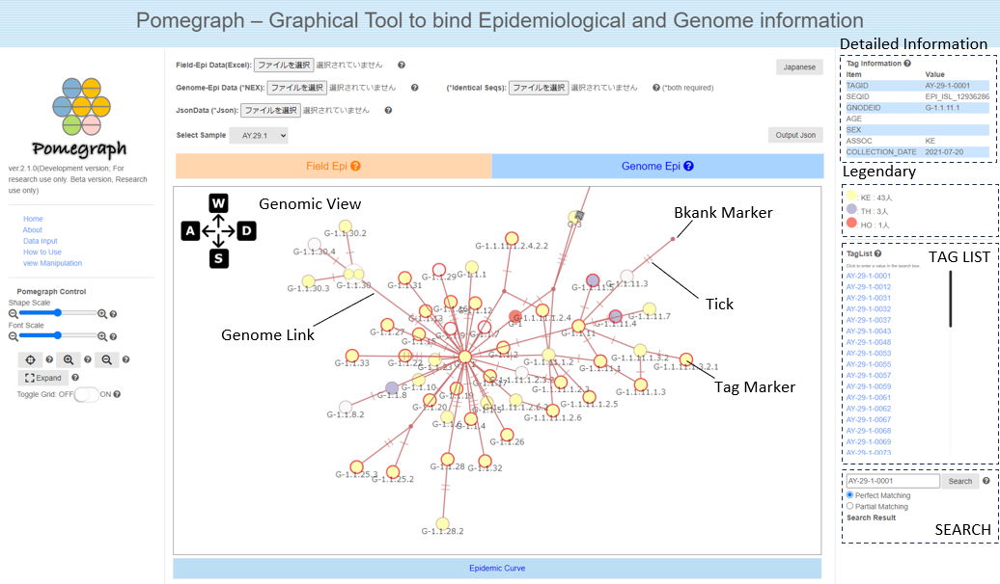

Pomegraph – Graphical Tool to bind Epidemiological and Genome information
Introduction
Pomegraph is an application developed for the analysis of the novel coronavirus (SARS-CoV-2), designed to integrate and visualize epidemiological field investigations and genomic epidemiology information. This app is built upon the foundation of the bi-directional graph visualization demo application, iGraph.js. Pomegraph draws lines of relation between subjects and target genomes based on epidemiological and genomic information. On the screen, subjects are represented as markers with labels, and are color-coded according to groups defined in the epidemiological survey form.
Data Loading
〇 Data Creation
To input data into Pomegraph, two types of data are required: epidemiological data and genomic data. These are created from the survey summary tables based on field epidemiological investigations and the pathogen genome information obtained from specimens, respectively. The epidemiological data is created by following an Excel template from the original survey summary tables. The genomic data input is the result file (in PopART type Nexus format) obtained from molecular phylogenetic tree estimation programs like PopART, based on pathogen genome sequences.
〇 Data Input
To render the view, data loading is necessary. Loading epidemiological information data (in xlsx format) into "Epidemiological Data (Excel)" will display the epidemiological view. Loading the result data of molecular phylogenetic tree estimation (in Nexus format) into "Genomic Data (*NEX)", and a list of identical base sequences (in PopART's log format) into "Identical Sequence Data (*log)" will display the results combining epidemiological and genomic data in the genomic view. Drawings edited by the user can be saved in Json format by clicking the "Export Json File" button. Additionally, selecting a SARS-CoV-2 lineage from "Select Sample Data" will render sample data.

How to Use
This application contains two tab panels: the "Epidemiological View" and the "Genomic View". In the "Epidemiological View" tab, you can check the basic epidemiological connections of the subjects. The "Genomic View" tab allows you to examine the phylogenetic relationships of genomes in conjunction with epidemiological information.
〇Epidemiological View
This represents the subjects categorized by the onset/detection date along the timeline. The categorization follows the "association" field in the SurveySheet. By specifying in the "emphasize" field, the marker of the specified subject will be outlined in red. If there is definitive information about infection links based on interviews, etc., it can be written in PhysicalLink, and the related markers will be connected with a blue line. When you zoom in on the view, the tag number and date for each marker are displayed, and turning on "Switch Lanes" in the control panel will show lanes for easier viewing of the categorization.
Clicking on "Epidemic Curve" below the Epidemiological View will display a bar graph (epidemic curve) representing the number of specimens per day. It is color-coded in the same categorization as the Epidemiological View, and hovering the mouse cursor over it will show the number of subjects for the corresponding date and category.

〇Genomic View
This illustrates the connections based on the pathogen genome information of the subjects. Subjects with identical genome sequences are displayed together as a genome group, and genome groups that have a parent-child relationship are connected with genome links. The notches on the genome link represent the number of base substitutions between genome groups. Where a subject is inferred to serve as a bridge in the phylogenetic relationship and such a subject does not exist in the data, the node is displayed as a blank marker.

View Manipulation
| View Movement |
・Right drag with mouse ・WASD keys on keyboard ・Double-click to move to a specified location |
| View Zoom In/Out |
・Mouse wheel ・Control panel (zoom in) (zoom out) buttons ・Control panel button to display the entire object |
| Genome Group Movement |
Due to the genomic information and the number of data, genome groups and markers may overlap, so move them as needed. ・Left drag ・If zoomed in, click and drag on a part other than tag markers |
| Marker Movement |
・Zoom in until the shape of the marker is visible, then left drag ・Releasing the drag returns it to the original position, but holding the shift key while releasing will fix its position |
| Displaying Detailed Information |
・Click on the subject's marker ・Click on the tag number in the tag list |
| Subject Search |
・Search for a tag number in the search box to move to the subject's marker ・Clicking on the tag number in the tag list inputs the tag number into the search box ・Searching with partial matches displays a list of corresponding tag numbers in the search results ・Clicking on a tag number in the search results displays detailed information and inputs the tag number into the search box |
| Others |
・Clicking the "Full Screen Display" button on the control panel for a full screen view in a new tab ・Adjust the size of tag markers with the "Shape Size" slider in the control panel ・Adjust the size of tag text with the "Text Size" slider in the control panel |
Acknowledgements
The bibliographic information for iGraph.js, which served as the foundation for this app, is as follows.
- Tominski, C.; Abello, J. & Schumann, H.: CGV - An Interactive Graph Visualization System. Computers & Graphics, Vol. 33, No. 6, 2009.
- Tominski, C.; Abello, J.; van Ham, F. & Schumann, H.: Fisheye Tree Views and Lenses for Graph Visualization. Proc. of IV, London, IEEE, 2006.